- 00 Java 性能优化，是进阶高级架构师的炼金石.md.html
- 01 理论分析：性能优化，有哪些衡量指标？需要注意什么？.md.html
- 02 理论分析：性能优化有章可循，谈谈常用的切入点.md.html
- 03 深入剖析：哪些资源，容易成为瓶颈？.md.html
- 04 工具实践：如何获取代码性能数据？.md.html
- 05 工具实践：基准测试 JMH，精确测量方法性能.md.html
- 06 案例分析：缓冲区如何让代码加速.md.html
- 07 案例分析：无处不在的缓存，高并发系统的法宝.md.html
- 08 案例分析：Redis 如何助力秒杀业务.md.html
- 09 案例分析：池化对象的应用场景.md.html
- 10 案例分析：大对象复用的目标和注意点.md.html
- 11 案例分析：如何用设计模式优化性能.md.html
- 12 案例分析：并行计算让代码“飞”起来.md.html
- 13 案例分析：多线程锁的优化.md.html
- 14 案例分析：乐观锁和无锁.md.html
- 15 案例分析：从 BIO 到 NIO，再到 AIO.md.html
- 16 案例分析：常见 Java 代码优化法则.md.html
- 17 高级进阶：JVM 如何完成垃圾回收？.md.html
- 18 高级进阶：JIT 如何影响 JVM 的性能？.md.html
- 19 高级进阶：JVM 常见优化参数.md.html
- 20 SpringBoot 服务性能优化.md.html
- 21 性能优化的过程方法与求职面经总结.md.html
- 22 结束语 实践出真知.md.html
04 工具实践：如何获取代码性能数据？
首先解答一下上一课时的问题。磁盘的速度这么慢，为什么 Kafka 操作磁盘，吞吐量还能那么高？
这是因为，磁盘之所以慢，主要就是慢在寻道的操作上面。Kafka 官方测试表明，这个寻道时间长达 10ms。磁盘的顺序写和随机写的速度比，可以达到 6 千倍，Kafka 就是采用的顺序写的方式。
经过上一课时我们了解到，想要进行深入排查，需要收集较详细的性能数据，包括操作系统性能数据、JVM 的性能数据、应用的性能数据等。
那么，我们应该如何获取这些数据呢？本课时我将介绍一系列常用的性能测试工具。
nmon —— 获取系统性能数据
除了在上一课时中介绍的 top、free 等命令，还有一些将资源整合在一起的监控工具，
nmon 便是一个老牌的 Linux 性能监控工具，它不仅有漂亮的监控界面（如下图所示），还能产出细致的监控报表。
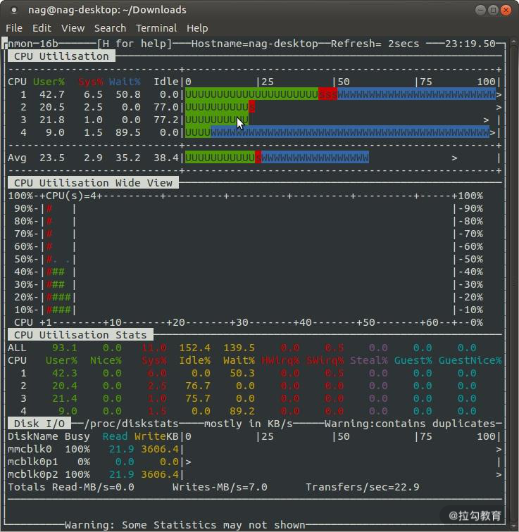
我在对应用做性能评估时，通常会加上 nmon 的报告，这会让测试结果更加有说服力。你在平时工作中也可如此尝试。
上一课时介绍的一些操作系统性能指标，都可从 nmon 中获取。它的监控范围很广，包括 CPU、内存、网络、磁盘、文件系统、NFS、系统资源等信息。
nmon 在 sourceforge 发布，我已经下载下来并上传到了仓库中。比如我的是 CentOS 7 系统，选择对应的版本即可执行。
./nmon_x86_64_centos7
按 C 键可加入 CPU 面板；按 M 键可加入内存面板；按 N 键可加入网络；按 D 键可加入磁盘等。
通过下面的命令，表示每 5 秒采集一次数据，共采集 12 次，它会把这一段时间之内的数据记录下来。比如本次生成了 localhost_200623_1633.nmon 这个文件，我们把它从服务器上下载下来。
./nmon_x86_64_centos7 -f -s 5 -c 12 -m -m .
注意：执行命令之后，可以通过 ps 命令找到这个进程。
[[email protected] nmon16m_helpsystems]# ps -ef| grep nmon
root 2228 1 0 16:33 pts/0 00:00:00 ./nmon_x86_64_centos7 -f -s 5 -c 12 -m .
使用 nmonchart 工具（见仓库），即可生成 html 文件。下面是生成文件的截图。
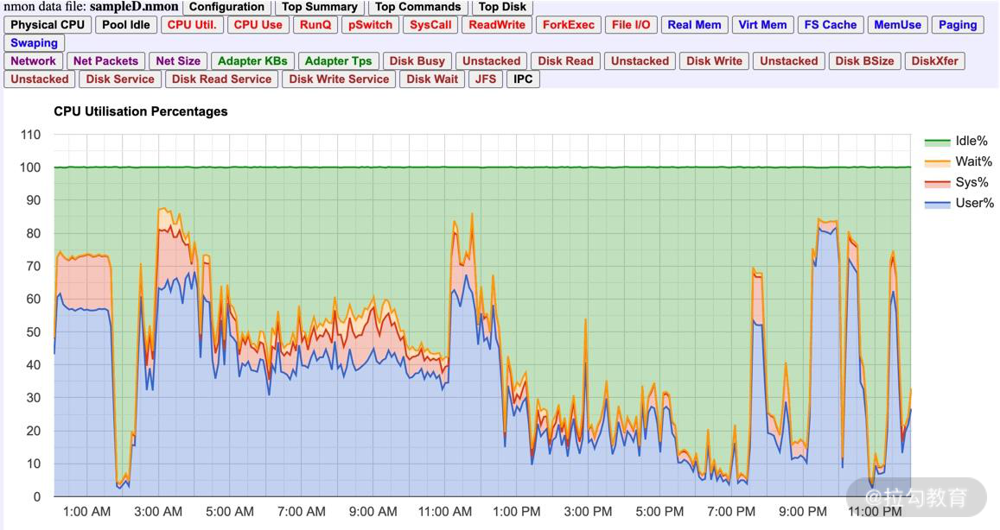 nmonchart 报表
jvisualvm —— 获取 JVM 性能数据
jvisualvm 原是随着 JDK 发布的一个工具，Java 9 之后开始单独发布。通过它，可以了解应用在运行中的内部情况。我们可以连接本地或者远程的服务器，监控大量的性能数据。
通过插件功能，jvisualvm 能获得更强大的扩展。如下图所示，建议把所有的插件下载下来进行体验。
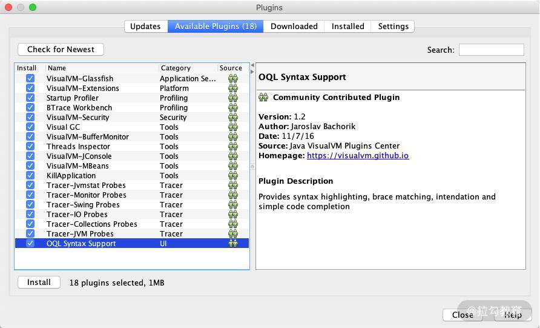 jvisualvm 插件安装
要想监控远程的应用，还需要在被监控的 App 上加入 jmx 参数。
-Dcom.sun.management.jmxremote.port=14000
-Dcom.sun.management.jmxremote.authenticate=false
-Dcom.sun.management.jmxremote.ssl=false
上述配置的意义是开启 JMX 连接端口 14000，同时配置不需要 SSL 安全认证方式连接。
对于性能优化来说，我们主要用到它的采样器。注意，由于抽样分析过程对程序运行性能有较大的影响，一般我们只在测试环境中使用此功能。
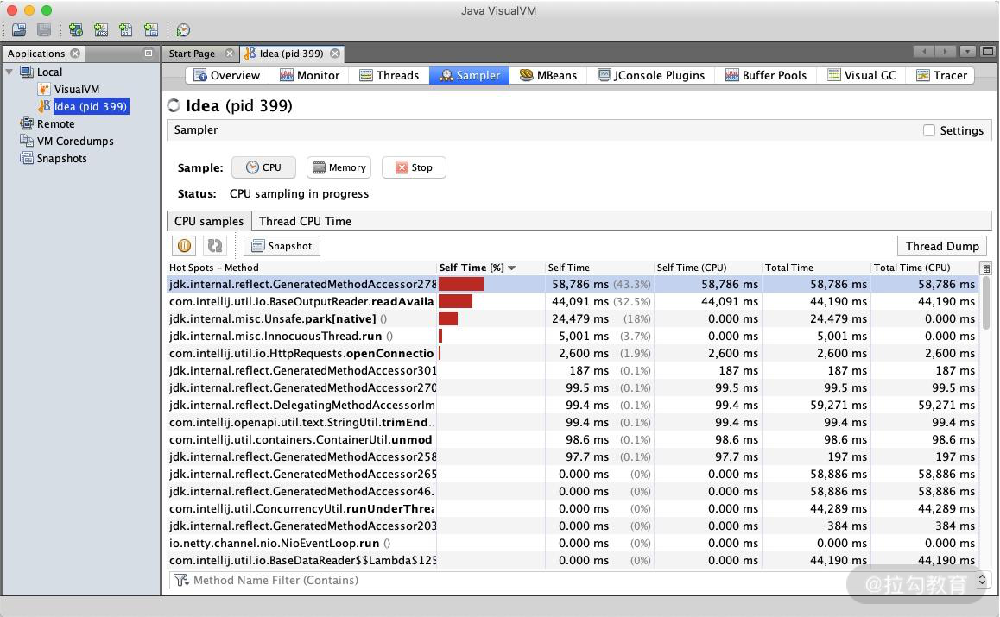
jvisualvm CPU 性能采样图
对于一个 Java 应用来说，除了要关注它的 CPU 指标，垃圾回收方面也是不容忽视的性能点，我们主要关注以下三点。
- CPU 分析：统计方法的执行次数和执行耗时，这些数据可用于分析哪个方法执行时间过长，成为热点等。
- 内存分析：可以通过内存监视和内存快照等方式进行分析，进而检测内存泄漏问题，优化内存使用情况。
- 线程分析：可以查看线程的状态变化，以及一些死锁情况。
JMC —— 获取 Java 应用详细性能数据
对于我们常用的 HotSpot 来说，有更强大的工具，那就是 JMC。 JMC 集成了一个非常好用的功能：JFR（Java Flight Recorder）。
Flight Recorder 源自飞机的黑盒子，是用来录制信息然后事后分析的。在 Java11 中，它可以通过 jcmd 命令进行录制，主要包括 configure、check、start、dump、stop 这五个命令，其执行顺序为，start — dump — stop，例如：
jcmd <pid> JFR.start
jcmd <pid> JFR.dump filename=recording.jfr
jcmd <pid> JFR.stop
JFR 功能是建在 JVM 内部的，不需要额外依赖，可以直接使用，它能够监测大量数据。比如，我们提到的锁竞争、延迟、阻塞等；甚至在 JVM 内部，比如 SafePoint、JIT 编译等，也能去分析。
JMC 集成了 JFR 的功能，下面介绍一下 JMC 的使用。
1.录制
下图是录制了一个 Tomcat 一分钟之后的结果，从左边的菜单栏即可进入相应的性能界面。
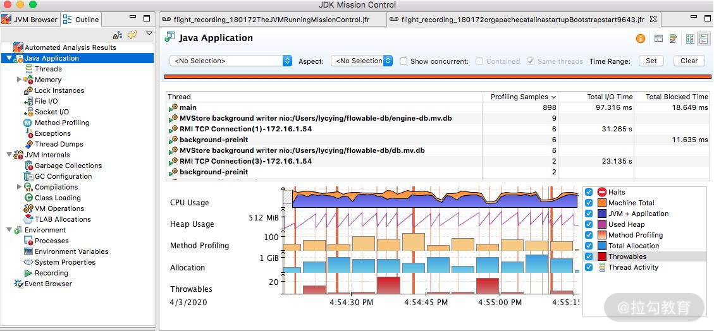
JMC 录制结果主界面
通过录制数据，可以清晰了解到某一分钟内，操作系统资源，以及 JVM 内部的性能数据情况。
2.线程
选择相应的线程，即可了解线程的执行情况，比如 Wait、Idle 、Block 等状态和时序。
以 C2 编译器线程为例，可以看到详细的热点类，以及方法内联后的代码大小。如下图所示，C2 此时正在疯狂运转。
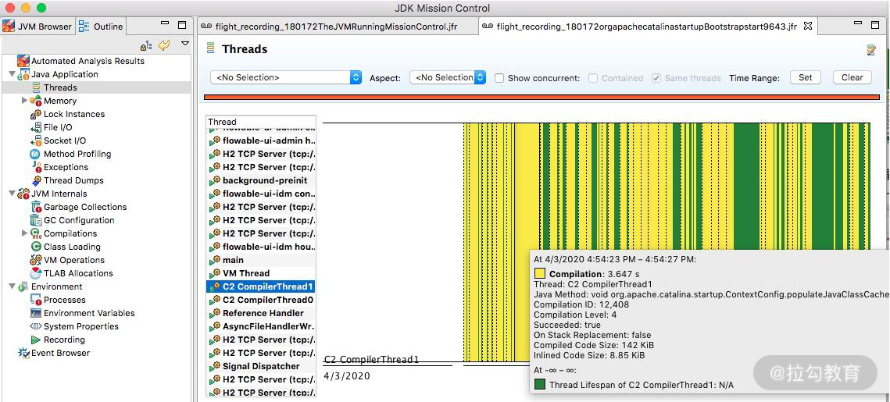
JMC 录制结果 线程界面
3.内存
通过内存界面，可以看到每个时间段内内存的申请情况。在排查内存溢出、内存泄漏等情况时，这个功能非常有用。
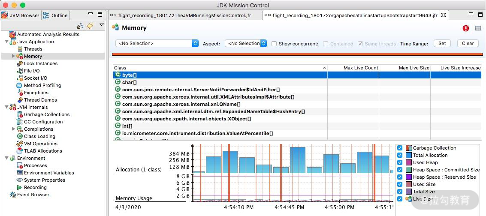
JMC 录制结果 内存界面
4.锁
一些竞争非常严重的锁信息，以及一些死锁信息，都可以在锁信息界面中找到。
可以看到，一些锁的具体 ID，以及关联的线程信息，都可以进行联动分析。
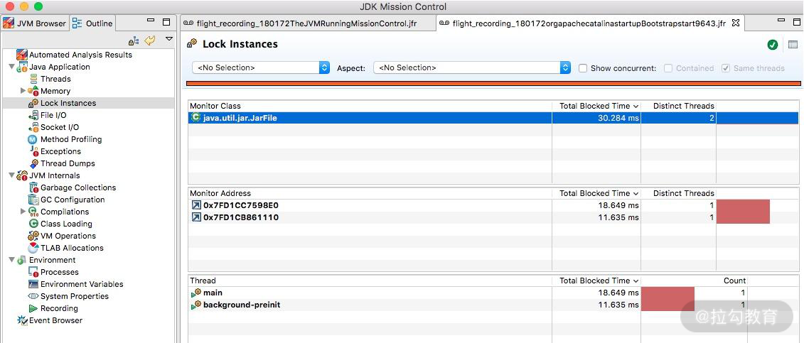
JMC 录制结果 锁信息界面
5.文件和 Socket
文件和 Socket 界面能够监控对 I/O 的读写，界面一目了然。如果你的应用 I/O 操作比较繁重，比如日志打印比较多、网络读写频繁，就可以在这里监控到相应的信息，并能够和执行栈关联起来。
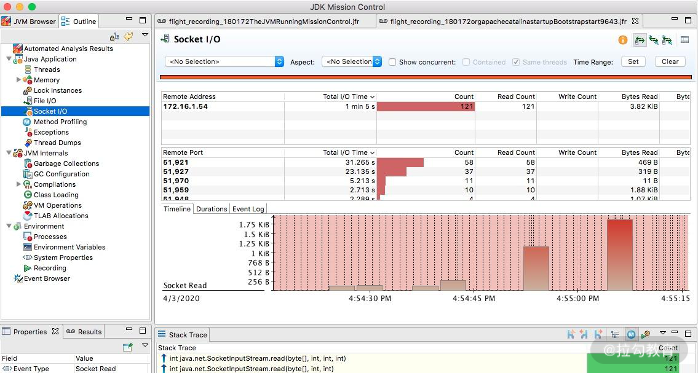
JMC 录制结果 文件和 Socket 界面
6.方法调用
这个和 jvisualvm 的功能类似，展示的是方法调用信息和排行。从这里可以看到一些高耗时方法和热点方法。
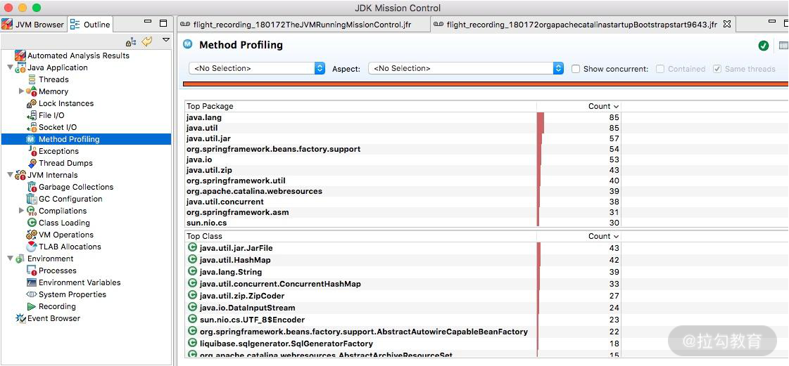
JMC 录制结果 方法调用
7.垃圾回收
如果垃圾回收过于频繁，就会影响应用的性能。JFR 对垃圾回收进行了详细的记录，比如什么时候发生了垃圾回收，用的什么垃圾回收器，每次垃圾回收的耗时，甚至是什么原因引起的等问题，都可以在这里看到。
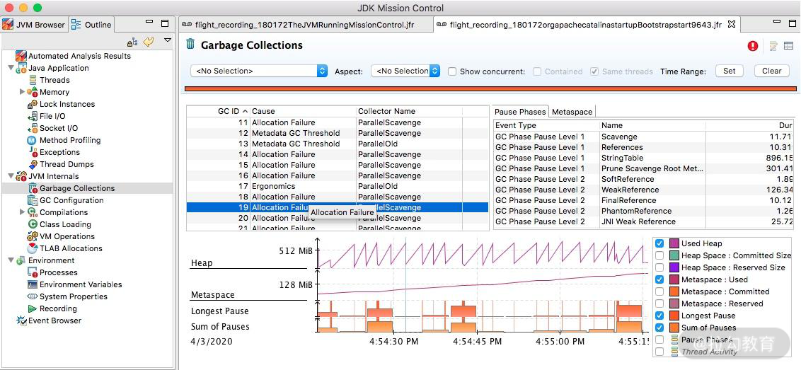
JMC 录制结果 垃圾回收
8.JIT
JIT 编译后的代码，执行速度会特别快，但它需要一个编译过程。编译界面显示了详细的 JIT 编译过程信息，包括生成后的 CodeCache 大小、方法内联信息等。
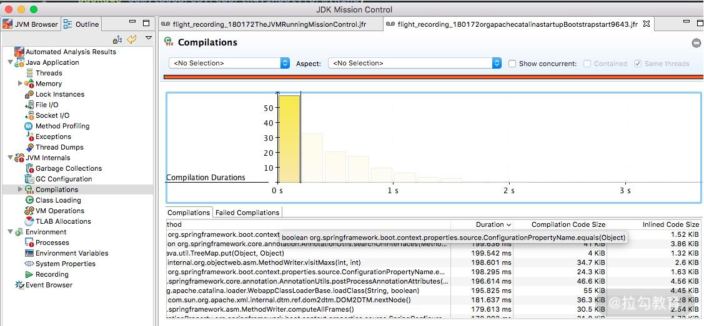
JMC 录制结果 JIT 信息
9.TLAB
JVM 默认给每个线程开辟一个 buffer 区域，用来加速对象分配，这就是 TLAB（Thread Local Allocation Buffer）的概念。这个 buffer，就放在 Eden 区。
原理和 Java 语言中的 ThreadLocal 类似，能够避免对公共区的操作，可以减少一些锁竞争。如下图所示的界面，详细地显示了这个分配过程。
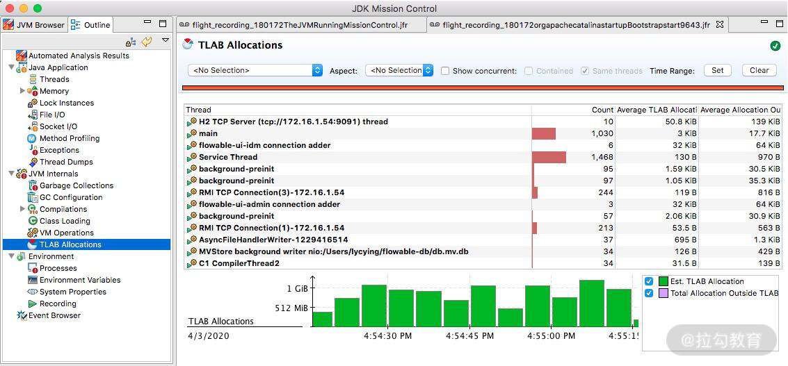
JMC 录制结果 TLAB 信息
在后面的课时中，我们会有多个使用此工具的分析案例。
Arthas —— 获取单个请求的调用链耗时
Arthas 是一个 Java 诊断工具，可以排查内存溢出、CPU 飙升、负载高等内容，可以说是一个 jstack、jmap 等命令的大集合。
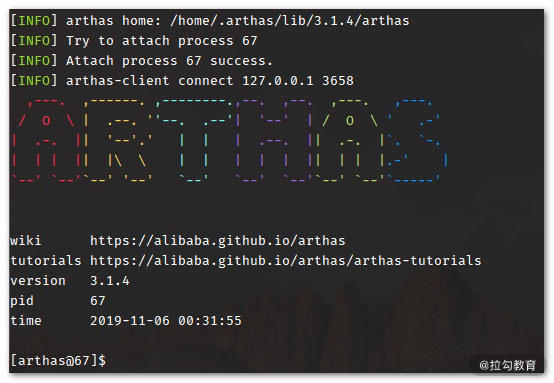
Arthas 启动界面
Arthas 支持很多命令，我们以 trace 命令为例。
有时候，我们统计到某个接口的耗时非常高，但又无法找到具体原因时，就可以使用这个 trace 命令。该命令会从方法执行开始记录整个链路上的执行情况，然后统计每个节点的性能开销，最终以树状打印，很多性能问题一眼就能看出来。
下面就是一个执行结果示例。
$ trace demo.MathGame run
Press Q or Ctrl+C to abort.
Affect(class-cnt:1 , method-cnt:1) cost in 28 ms.
`---ts=2019-12-04 00:45:08;thread_name=main;id=1;is_daemon=false;priority=5;[email protected]
`---[0.617465ms] demo.MathGame:run()
`---[0.078946ms] demo.MathGame:primeFactors() #24 [throws Exception]
`---ts=2019-12-04 00:45:09;thread_name=main;id=1;is_daemon=false;priority=5;[email protected]
`---[1.276874ms] demo.MathGame:run()
`---[0.03752ms] demo.MathGame:primeFactors() #24 [throws Exception]
我们在后面的课时中，也会有实例来演示如何找到问题发生的具体原因。
wrk —— 获取 Web 接口的性能数据
wrk（点击进入 GitHub 网站查看）是一款 HTTP 压测工具，和 ab 命令类似，它也是一个命令行工具。
我们先来看一下它的执行结果。
Running 30s test @ http://127.0.0.1:8080/index.html
12 threads and 400 connections
Thread Stats Avg Stdev Max +/- Stdev
Latency 635.91us 0.89ms 12.92ms 93.69%
Req/Sec 56.20k 8.07k 62.00k 86.54%
22464657 requests in 30.00s, 17.76GB read
Requests/sec: 748868.53
Transfer/sec: 606.33MB
可以看到，wrk 统计了常见的性能指标，对 Web 服务性能测试非常有用。同时，wrk 支持 Lua 脚本，用来控制 setup、init、delay、request、response 等函数，可以更好地模拟用户请求。
小结
为了获取更多性能数据，我们在本课时介绍了以下 5 款工具。
- nmon 获取系统性能数据；
- jvisualvm 获取 JVM 性能数据；
- jmc 获取 Java 应用详细性能数据；
- arthas 获取单个请求的调用链耗时；
- wrk 获取 Web 接口的性能数据。
可以看出，这些工具有偏低层的、有偏应用的、有偏统计的、有偏细节的，在定位性能问题时，你需要灵活地使用这些工具，既从全貌上掌握应用的属性，也从细节上找到性能的瓶颈，对应用性能进行全方位的掌控。
这些工具能够很好地帮助我们找到系统的瓶颈点，那么对代码进行优化时，如何分析优化效果呢？又如何对代码片段进行快速、专业的测试呢？下一课时，我将介绍“基准测试 JMH”，来解答以上问题。